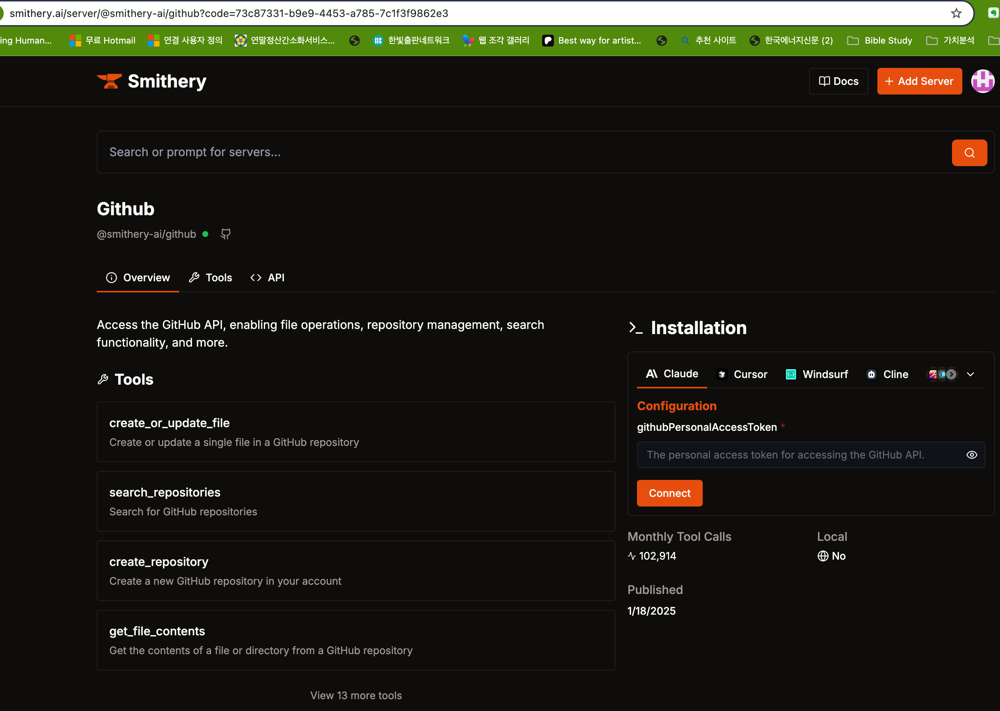

MCP Smithery_"Smithey GitHub API 도구" 사용 방법 및 상세 설명
IT
2025-03-27 04:38:16

"Smithey GitHub API 도구" 사용 방법 및 상세 설명
안녕하세요! 오늘은 GitHub API를 활용하여 파일 작업, 저장소 관리, 검색 등의 기능을 제공하는 Smithey라는 도구에 대해 자세히 알아보겠습니다. 이 도구는 GitHub API를 기반으로 다양한 작업을 자동화할 수 있는 강력한 기능을 제공합니다. 아래는 Smithey 도구의 주요 기능과 사용 방법을 한글로 상세히 정리한 내용입니다.
Smithey란 무엇인가요?
Smithey는 GitHub API를 활용하여 파일 생성, 저장소 검색, 저장소 생성, 파일 내용 조회 등 다양한 작업을 수행할 수 있는 도구입니다. Smithey는 GitHub 계정과 연동하여 사용자가 GitHub에서 수행할 수 있는 작업을 더 쉽게 관리할 수 있도록 설계되었습니다. 이 도구는 특히 개발자나 GitHub를 자주 사용하는 사용자에게 유용하며, API 호출을 통해 작업을 자동화할 수 있는 점이 큰 장점입니다.
Smithey의 주요 기능
Smithey는 다음과 같은 주요 기능을 제공합니다:
create_or_update_file: GitHub 저장소에서 파일을 생성하거나 업데이트합니다.
search_repositories: GitHub 저장소를 검색합니다.
create_repository: 새로운 GitHub 저장소를 생성합니다.
get_file_contents: GitHub 저장소에서 파일이나 디렉토리의 내용을 가져옵니다.
이 외에도 13개 이상의 추가 도구가 있으며, 이를 통해 GitHub API를 활용한 다양한 작업을 수행할 수 있습니다.
Smithey 사용 방법: 30단계로 세분화된 가이드
Smithey를 효과적으로 사용하기 위해 아래 30단계로 나누어 상세히 설명하겠습니다. 이 가이드는 초보자도 쉽게 따라 할 수 있도록 구성되었습니다.
1단계: Smithey 웹사이트 접속
Smithey를 사용하려면 먼저 공식 웹사이트에 접속해야 합니다. 브라우저에서 smithey.ai로 이동하세요.